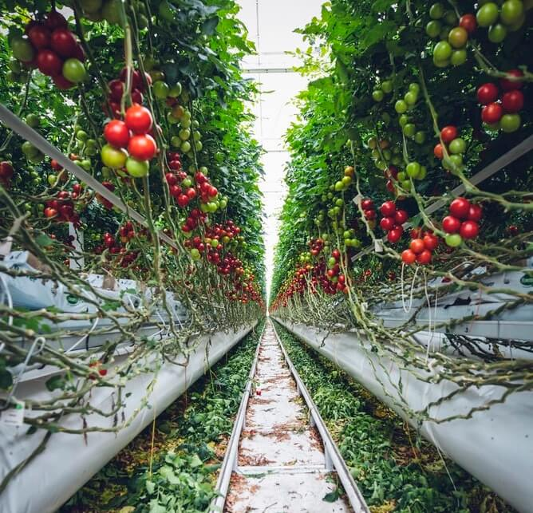

Current research emphasises the promotion of plant-rich diets to
combat climate change, through a transformational shift in the current
food system, aiming to reduce greenhouse gas emissions and minimise
the water footprint and waste.
Dr Pauline Scheelbeek, from the London School of Hygiene and Tropical
Medicine, presented a talk in March at the University of Bristol on
climate change mitigation through changes in our food system. She
outlined that the food system encompasses everything from farming,
food production and packaging, to consumption and food waste. The
current food system has a considerable impact on greenhouse gas
emissions—in total contributing between 21% to 37%—with about 31% of
these emissions being attributed to livestock and fisheries alone.

The current food system has an impact on greenhouse gas emissions
and approximately 31% of these emissions can be attributed to the
meat and fish industry. Recent research proposes a movement to a
more sustainable diet, increasing vegetable and legumbre production
will, not surprisingly, slow down the current climate crisis |
Ettiene Girardet & Marcus Spiske / Unsplash
This highlights the problems of a meat- and dairy-based diet, and how
the demand of which is negatively affecting the climate. A meat-based
diet, in particular, is not only unsustainable, but a huge contributor
to health problems; specifically being linked to the growing cases of
obesity worldwide. In the United Kingdom alone, the rate of obesity
and those overweight is 64%.
Dr Pauline Scheelbeek, an Assistant Professor in Nutritional and
Environmental Epidemiology, who also has a background in food system
programmes, emphasises the benefits in tackling all parts of the food
system, in order to reduce the impact of the current climate crisis.
Changes to the food system and its effects on climate can be addressed
at every step of the chain, in particular at the consumption level.
The question is, is the impact of the current food system a direct
result of the consumer? And if so, is it the people's responsibility?
Unfortunately, the answer may not be that simple.
‘The food system encompasses everything from farming, food production and packaging to consumption and food waste.’
The food system and its effects are also influenced by how the food
industry promotes certain products to consumers. We know this, since
the consumption of many of these products do not contribute to a
healthy lifestyle. The most accessible products are often the ones
most detrimental to our physical health, such as processed foods that
can cause conditions such as diabetes and heart disease. Dr Scheelbeek
also emphasizes other global health impacts of the current food system
at the other end of the spectrum, such as anemia, micronutrient
deficiency and stunting.
Another important aspect to consider is how the current system serves
the environment. Research has shown that the food industries, such as
the meat and fish industry, have been considerably taxing to the
environment in terms of greenhouse gas emissions, water footprint and
waste.
A change from the current food system through the adoption of various
other systems showed the predicted effects in reducing greenhouse
gas emissions. The bar in ‘light green’ shows what could happen if a
rich plant diet was adopted globally , this can be compared to the
black bar labelled ‘Business-as-usual’ which is the current system |
Clark (2020) / Science
Dr Scheelbeek’s research promotes the scaling up of fruit and vegetable
consumption. This means that adopting a sustainable diet through
increasing the consumption of vegetables and fruits may help mitigate
climate change. However, this can also be promoted earlier on in the
production chain, through encouraging an increase in horticulture
practices within countries. The improved use of land and water would
thus contribute to the reduction of global greenhouse gas emissions.
Recent studies into food systems and its effects in decreasing or
slowing the rise of the global average temperature, suggest that the
most effective change in food systems may come from the adoption of a
plant-rich diet. This behaviour-change approach may also help in the
reduction of water and waste.
‘The current food system uses 70% of the global freshwater resources.’
The current 5 a day recommendations of a nutritional and balanced diet,
which is currently promoted by the UK government, may not be enough to
create the transformational change in mitigating climate change.
Scheelbeek’s research draws on the Eatwell Guide (EWG) recommendations
set out by government bodies, which promote the consumption of
vegetables and legumes in the UK. The EWG also suggests reducing the
consumption of meats and high-sugar foods, due to their connection to
cardiovascular diseases and cancer.
However, there are also concerns that the public may struggle to adhere
to a more demanding government-approved diet. Dr Scheelbeek’s study
found that those who have a medium-to-high adherence to the EWG manage
to reduce greenhouse gas emissions more than those with poorer
adherences to this diet. Adherence to the EWG has also shown many
health benefits.
‘26% of global greenhouse gas emissions come from the food system. Of
these, 31% comes from livestock and fisheries, 27% from crop production,
24% land use and 18% from the supply chain.’
Scaling up the production of vegetables and fruits will require the
expansion of its farming through increased implementation of
horticulture across the UK. In order to alleviate our impacts on the
environment, the UK Government will need to actively invest in
horticulture production at a national level, including start-up
vertical
farming and hydroponic technologies. Dr Scheelbeek’s research also
found additional positive effects on countryside biodiversity with this
type of shift in food production and farming.
Increasing the production and consumption of fruit and vegetables,
whilst decreasing investment into livestock agriculture, may be the
solution for both climate change and population nutritional deficiencies.
Our global community needs to be encouraged to make transformational
changes of the food system, both on an individual and systemic level,
in order to reduce global emissions and mitigate climate change.
‘Scaling up’ in fruit and vegetables may require a shift from 5 a
day to 7 a day | Markus Spiske / Unsplash
Sustainable diets, through the increase of production and consumption
of fruit and vegetables, may be the solution for both climate change
and population nutritional deficiencies. The UK and the rest of the
world need to be encouraged to make transformational changes of the
food system to reduce global emissions and mitigate climate change.
Consumers may also contribute to the mitigation of these factors
through the adoption of a plant-rich diet. Additionally, the population
will benefit from a disease preventing diet if more people consider
adhering to the EWG. However, the benefits may not be enough solely
from the consumer level and governments need to commit to
transformational changes along the current food system.
Feature Image: Tomas Hertog, Nur Alamin, The Creative, Mae Mu, Edgar Castrejon and Deryn Macey | Unsplash
Scheelbeek P, Green R, Papier K, et al Health impacts and environmental footprints of diets that meet the Eatwell Guide recommendations: analyses of multiple UK studies
BMJ Open 2020;10:e037554
National Health Services. Health and Social Care Information Centre. Statistics on obesity, physical activity and diet England, 2020.
Poore, J., & Nemecek, T. (2018). Reducing food’s environmental impacts through producers and consumers. Science 360(6392), 987-992.
Ali, Z., Green, R., Zougmoré, R.B. et al. Long-term impact of West African food system responses to COVID-19.
Nat Food 1 768–770 (2020)
Clark M., Domingo N., Colgan K., Thakrar S., Tilman D., Lynch J., Azevedo I., Hill J. Global food system emissions could preclude achieving the 1.5° and 2°C climate change targets
Science 370 705–708 (2020)